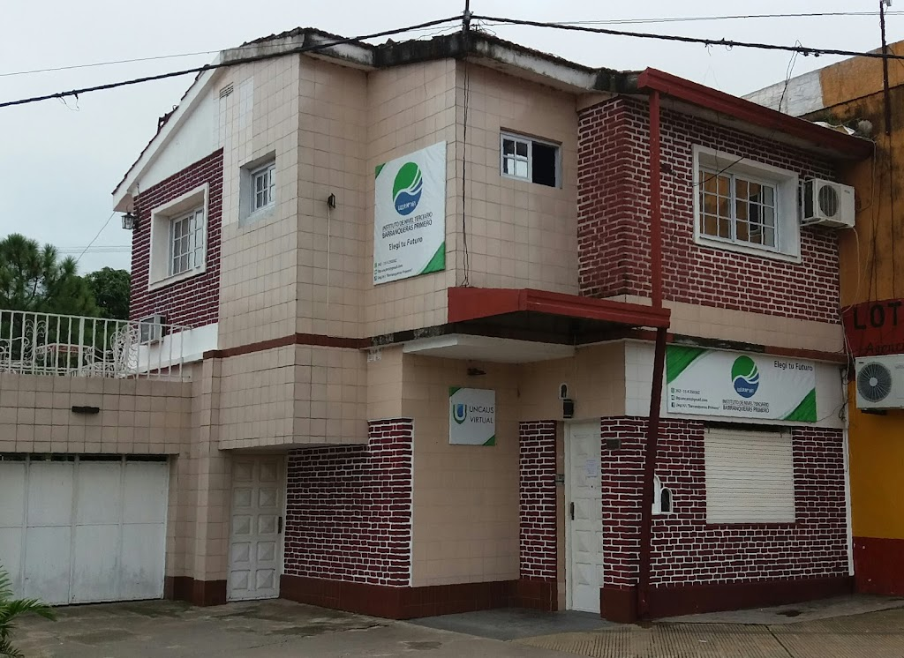

Quienes somos?
Somos la Primera Institución en implementar la formación Técnica en Economía Social y Desarrollo Local en la Provincia del Chaco y actualmente la Única en el País que dicta esta especialización complementada con conocimientos en derechos portuarios y aduaneros, comercio internacional y énfasis en el manejo técnico de los idiomas Castellano, Inglés y Portugués.
También desde la formación de sus cuadros técnicos en Gestión Ambiental hemos aportado desde profesionales que no solo fueron los diseñadores de plantas de reciclado de residuos sólidos urbanos, sino que hoy mismo las conducen; hasta profesionales que permanentemente diseñan, implementan y gestionan en la provincia proyectos nacionales e internacionales con financiamiento externo.
Mantenemos Convenios de colaboración interinstitucional con Municipios de la Provincia del Chaco sino también con la comuna de la Provincia de Santa Fe como de Villa Guillermina.
Nuestras carreras tienen distintas modalidades de cursado y hemos implementando una modelo Académico Virtual y dar mayor soporte digital a todos nuestros alumnos. Esto lo hacemos con esfuerzo e iniciativa propia para justamente convertirnos en referencia de excelencia académica y proyección profesional dentro del campo Académico Superior de la zona Sur del Gran Resistencia.
En el año 2021, el M.E.C.C.yT dictó la resolución ministerial, por la que autoriza a la U.E.G.P. Nº161 “Instituto BARRANQUERAS” iniciar el dictado, sin subvención, de las Tecnicaturas Superiores en Administración Municipal y Desarrollo de Software
Esta trascendente autorización alcanzada coloca a la Institución frente a un hermoso desafío que para el cumplimiento de las metas que requiere la implementación de las mismas, se toma la decisión de conformar la U.A.C. (Unidad Administrativa Contable).
Desde el enfoque en la cuestión Administrativa Contable, se pretende de esta Unidad de Gestión obtener la información necesaria para planificar. Asimismo se apunta a la obtención de esta información otorgando más importancia a los datos cualitativos y a los costes, utilizándolos en el análisis de las decisiones como estimaciones para predecir el futuro de la esta línea de Servicio.
Forman parte del Equipo Directivo:
- Rector: Gustavo Toranzo.
- Secretario Académico: Raúl Peñaflor.
- Director de Estudio Economía Social y Desarrollo Local: Enrique Zarabozo.
- Directora de Estudios Gestión Ambiental: Maximiliano Fernández.
- Representante Legal: Adriana Azcona
- Bedeles: Malvinas Linda Ojeda, González Susana de la Cruz.